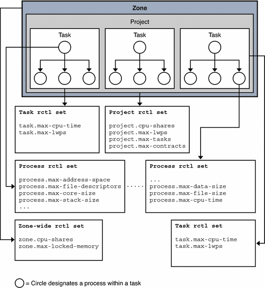

Previous
Previous
Global Actions and Global Flags
Global flags apply to all current resource control values represented by this resource control block. Global actions and global flags are set by rctladm(1M). Global actions and global flags cannot be set with setrctl(). Global flags apply to all resource controls. For each threshold value that is placed on a resource control, the following global actions and global flags are available:
- RCTL_GLOBAL_NOACTION
No global action is taken when a resource control value is exceeded on this control.
- RCTL_GLOBAL_SYSLOG
A standard message is logged by the syslog() facility when any resource control value on a sequence associated with this control is exceeded.
- RCTL_GLOBAL_SECONDS
Defines the unit string of the limit value as seconds.
- RCTL_GLOBAL_COUNT
Defines the unit string of the limit value as count.
- RCTL_GLOBAL_BYTES
Defines the unit string of the limit value as bytes.
- RCTL_GLOBAL_SYSLOG_NEVER
Flag means that RCTL_GLOBAL_SYSLOG cannot be set for this resource control through rctladm(1M).
- RCTL_GLOBAL_NOBASIC
No values with the RCPRIV_BASIC privilege are permitted on this control.
- RCTL_GLOBAL_LOWERABLE
Non-privileged callers are able to lower the value of privileged resource control values on this control.
- RCTL_GLOBAL_DENY_ALWAYS
The action that is taken when a control value is exceeded on this control always includes denial of the resource.
- RCTL_GLOBAL_DENY_NEVER
The action that is taken when a control value is exceeded on this control always excludes denial of the resource. The resource is always granted, although other actions can also be taken.
- RCTL_GLOBAL_FILE_SIZE
The valid signals for local actions include the SIGXFSZ signal.
- RCTL_GLOBAL_CPU_TIME
The valid signals for local actions include the SIGXCPU signal.
- RCTL_GLOBAL_SIGNAL_NEVER
No local actions are permitted on this control. The resource is always granted.
- RCTL_GLOBAL_INFINITE
This resource control supports the concept of an unlimited value. Generally, an unlimited value applies only to accumulation-oriented resources, such as CPU time.
- RCTL_GLOBAL_UNOBSERVABLE
Generally, a task or project related resource control does not support observational control values. An RCPRIV_BASIC privileged control value placed on a task or process generates an action only if the value is exceeded by the process that placed the value.
Resource Control Sets Associated With a Project, Processes, and Tasks
The following figure shows the resource control sets associated with tasks, processes and a project.
Figure 5-1 Resource Control Sets for Task, Project, and ProcessMore than one resource control can exist on a resource, each resource control at a containment level in the process model. Resource controls can be active on the same resource for both a process and collective task or collective project. In this case, the action for the process takes precedence. For example, action is taken on process.max-cpu-time before task.max-cpu-time if both controls are encountered simultaneously.
Resource Controls Associated With a Project
Resource controls associated with a project include the following:
- project.cpu-cap
Absolute limit on the amount of CPU resources that can be consumed by a project. A value of 100 means 100 percent of one CPU as the project.cpu-cap setting. A value of 125 is 125 percent, because 100 percent corresponds to one full CPU on the system when using CPU caps.
- project.cpu-shares
The number of CPU shares that are granted to this project for use with the fair share scheduler, FSS(7).
- project.max-crypto-memory
Total amount of kernel memory that can be used by libpkcs11 for hardware crypto acceleration. Allocations for kernel buffers and session-related structures are charged against this resource control.
- project.max-locked-memory
Total amount of physical locked memory allowed.
Note that this resource control replaced project.max-device-locked-memory, which has been removed.
- project.max-msg-ids
Maximum number of System V message queues allowed for a project.
- project.max-port-ids
Maximum allowable number of event ports.
- project.max-sem-ids
Maximum number of semaphore IDs allowed for a project.
- project.max-shm-ids
Maximum number of shared memory IDs allowed for this project.
- project.max-msg-ids
Maximum number of message queue IDs allowed for this project.
- project.max-shm-memory
Total amount of System V shared memory allowed for this project.
- project.max-lwps
Maximum number of LWPs simultaneously available to this project.
- project.max-tasks
Maximum number of tasks allowable in this project.
- project.max-contracts
Maximum number of contracts allowed in this project.